Lemur user manual
Lemur records your calls and in-person meetings, and turns each one into a note: a summary, action items, decisions and the full transcript. This manual covers installing it, what it does on its own, and every window and setting.
Getting started
Lemur has two halves. The app on your PC records. Servers on your network turn the recording into text and notes. If someone else runs the servers, you need their address and your own key (or a setup file from them). If you run them yourself, see the self-hosting guide.
Install
- Double-click
Lemur-1.2.0.msi. It installs just for you, into%LOCALAPPDATA%\Programs\Lemur, so it doesn't need an administrator. - The installer isn't signed yet, so Windows may show Windows protected your PC. Choose More info, then Run anyway.
- When it finishes, let it start Lemur. The setup window opens the first time.
The installer adds two Start menu shortcuts: Lemur and Lemur Help
(this manual). It also adds Lemur's folder to your PATH, so the llmmr
command works in any new terminal.
Only one Lemur runs at a time. Starting it again from the Start menu while it's running opens its Recordings window.
To update, run the newer installer the same way, between calls: it closes Lemur, puts the new version over the old one, and starts it again. Your settings, keys, people, recordings and notes stay as they are.
Upgrading from Teams Recorder
Lemur used to be called Teams Recorder. The first time Lemur starts, it brings everything over:
| What | From | To |
|---|---|---|
| Settings and the people folder | %APPDATA%\TeamsRecorder | %APPDATA%\Lemur |
| Recordings and logs | %LOCALAPPDATA%\TeamsRecorder | %LOCALAPPDATA%\Lemur |
| Keys in Credential Manager | TeamsRecorder:<name> | Lemur:<name> |
| Start at sign-in | Teams Recorder's entry | Lemur's entry |
- Quit Teams Recorder first (its tray icon → Quit). If it's still running, Lemur tells you and closes; start Lemur again once Teams Recorder has quit.
- Folders are moved, not copied. If a Lemur folder already has files in it, nothing is overwritten: the old folder stays where it is. The same goes for a key Lemur already has under the same name.
- Your notes stay where they are. Their Name speakers links still work, and old
.trecsetupfiles still import.
First-run setup
The setup window walks through six steps: Welcome to Lemur, Account, Recording, Notes, People and Ready. Most steps are the same pages as in Settings, so you can change anything later.
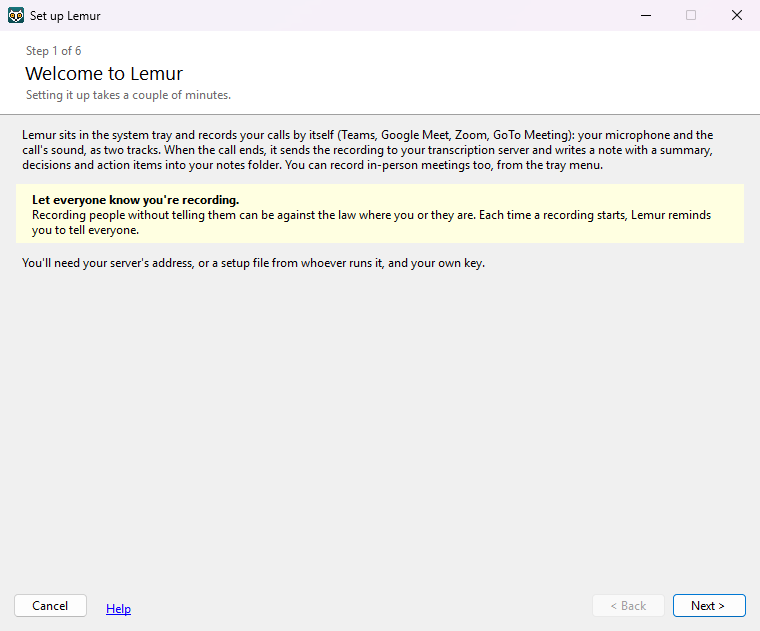
- Welcome. What Lemur does. You'll need your server's address (or a setup file) and your own key.
- Account. If you were given a
.lemursetupfile, click Import setup file… first: it fills in everything except your key. Then click Change… next to each key and paste it in. Details in Account settings. - Recording. Whether to record calls by themselves, and from which devices. The defaults suit most people.
- Notes. Where notes go (
Documents\Meeting Notesunless you choose another folder) and how long the working audio is kept. - People. Optional: recognising people by their voice, and where the people you name are kept. You can pick This PC, OneDrive, or A folder I already use on another PC.
- Ready. Lemur tests each server. Tick Start Lemur when I sign in to Windows so it's always there for your calls, then click Finish.
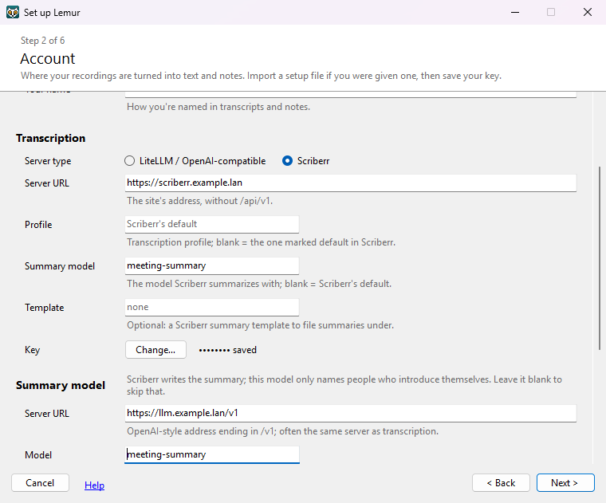
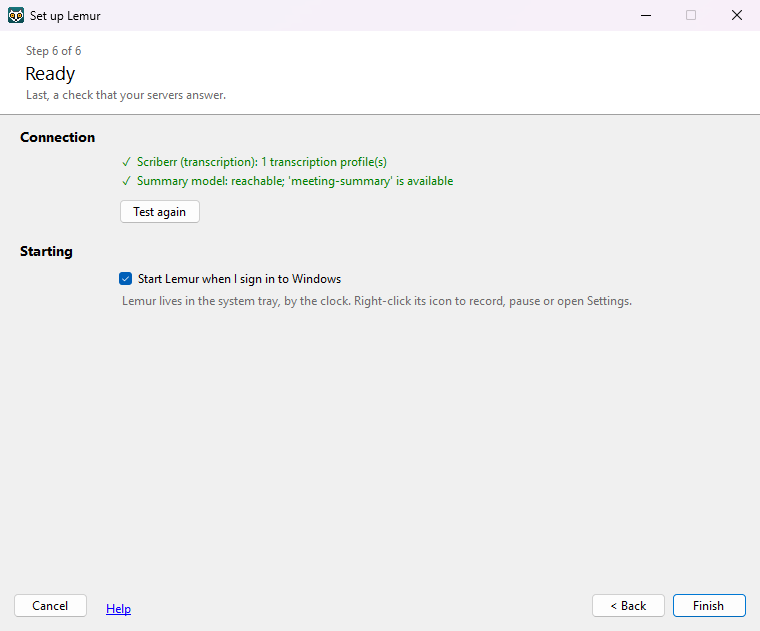
Click Test again, or go < Back and fix the address or key. You can also click Finish anyway. Lemur still records your calls, but it can't make notes until the servers answer. Its tray icon is yellow until then.
If you close the setup window, Lemur still starts with blank settings. Open Settings… from the tray menu to finish later.
Recording
Lemur records two tracks at once: your microphone, and everything your headset or speakers play (everyone else on the call). Keeping them apart is how Lemur knows which lines are yours: each word goes to the track it was said on, so a line where someone cuts in is split between you.
Calls, automatically
Once a second, Lemur asks Windows which apps are using the microphone. When a call app holds it for 3 seconds, recording starts. When the app lets go of it for 15 seconds, recording stops and the notes are made. The 15 seconds ride out things like switching headsets.
| Built-in | How Lemur tells it's a call | Tried on real calls? |
|---|---|---|
| Teams (Edge) | Edge uses the mic, and one of its windows is titled … | Microsoft Teams | Yes |
| Teams (Chrome) | The same, in Chrome | Not separately |
| Teams (app), Teams (classic) | The Teams app uses the mic | Not yet |
| Google Meet (Edge), Google Meet (Chrome) | The browser uses the mic, and a window shows a Meet tab | Not yet |
| Zoom (Edge), Zoom (Chrome) | The browser uses the mic, and a window shows a tab titled Zoom | Not yet |
| Zoom, GoTo Meeting, GoTo Meeting (classic) | The app uses the mic | Not yet |
You can switch any of them off on the Recording tab. If one of them doesn't start on its own, use Start recording now and see Troubleshooting.
- Muting doesn't stop a recording. Teams keeps the microphone open while you're muted, so a long mute is still one recording.
- Very short calls are thrown away. An automatic recording under 60 seconds is discarded, because it's usually Teams' microphone preview before you join. You'll see Recording not kept. To keep a short call, stop the recording yourself from the tray menu.
- A browser call needs its tab showing. Lemur reads window titles, which show each window's current tab. A call started in a background tab is picked up once you switch to it.
- It follows your headset. If the call uses a headset that isn't the Windows default, that's what gets recorded. Switch headsets mid-call and the recording follows within a few seconds.
- Sleep and sign-out. If the PC goes to sleep or you sign out during a call, the recording is stopped and kept.
- Pausing. Pause auto-record for 1 hour in the tray menu stops calls starting recordings. Resume auto-record undoes it.
- Stopping one call. If you stop a call's recording yourself, Lemur doesn't start recording that same call again.
The "everyone else" track is all the sound going to the call's headset or speakers. A video or a notification sound playing on the same device during a call ends up in the transcript. Pause other audio during calls.
Back-to-back meetings
When you leave one Teams meeting and join the next, Teams takes the microphone back within a couple of seconds. Lemur notices the gap. If the Teams window then shows its join screen or a different meeting's name, Lemur ends the first recording and starts a new one, so each meeting gets its own note.
- Leaving and rejoining the same meeting also shows the join screen, so it's split into two notes too.
- To split by hand, choose Start a new recording (next meeting) from the tray menu.
- Notifications about earlier meetings wait until your call ends, so they don't pop up during the next one.
In person, or any app
Choose Start recording now from the tray menu, and Stop recording when you're done. Use it for meetings in a room, or a call app Lemur doesn't know.
- Lemur records from whichever app has a microphone open, and its headset; with none, the Windows defaults. It keeps following that app: change the microphone in the call, or join the call after starting, and the recording moves with it within a few seconds.
- Recordings you start yourself are never thrown away for being short.
- In a room there's no call audio to compare with, so Lemur can't tell which voice is yours from the two tracks. Speakers are labelled Speaker A, Speaker B and so on. With voice recognition on, Learn my voice from calls lets it recognise you anyway.
From your phone or another recorder
A meeting you recorded somewhere else, on your phone, a dictaphone or as a video, becomes notes like any other. Give it to Lemur in any of these ways:
- An import folder. Choose one on the Recording tab, under Recordings from elsewhere. A folder that syncs from your phone works well: OneDrive, iCloud Drive or Nextcloud. Save a voice memo there from your phone and Lemur picks it up within a minute, once it has finished arriving. When Lemur has it, the file moves to an Imported folder inside, so you can see it was taken. Lemur never deletes your file.
- Import… in the Recordings window, or Import a recording… in the tray menu. Pick one file or several.
- Drop the file on the Recordings window.
For one file, Lemur shows what it worked out before importing, so you can change it:
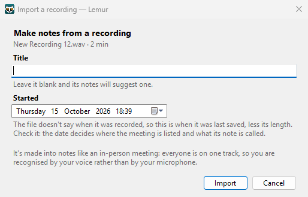
- Title. From the file's name, unless it says nothing ("New Recording 12", "Voice 003"). Leave it blank and the notes suggest one. A title from a file you didn't type yourself, from the import folder, is only a stand-in: phones often name recordings after the street they were made in, so the notes' title replaces it.
- Start time. Phones write the time they started recording into the file (m4a, mp4, mov, 3gp), and Lemur uses that. Otherwise it looks for a date and time in the file's name, and failing that uses when the file was last saved, less its length. The date decides where the meeting is listed and what its note is called.
- Files Windows can read: m4a, mp3, wav, aac, wma, flac, 3gp and amr, and the sound of mp4, mov and m4v videos. Ogg, opus and webm need Microsoft's free Web Media Extensions. A file Lemur can't use (not a recording, or silent) moves to a Couldn't import folder inside the import folder, and a notification says why.
- The same file twice is noticed and not made into notes again.
- It's made into notes like an in-person meeting: everyone is on one track, so you're recognised by your voice, with voice recognition on, rather than by your microphone.
Telling people you're recording
Recording people without telling them can be against the law where you or they are. Some places (for example Illinois and California) need everyone's consent, and your employer may have its own rules. Each time a recording starts, Lemur's notification says Let everyone know you're recording.
The tray icon and menu
Lemur lives in the system tray, by the clock. If you can't see it, click the ^ arrow there, and drag the icon onto the taskbar to keep it in view. Its colour tells you what it's doing:
- Grey-blue dot: watching for calls.
- Red: recording.
- Orange: making meeting notes.
- Yellow: needs setup. Calls are still recorded, but notes can't be made until settings are filled in.
- Grey ring: auto-record is paused.
Point at the icon to see its status. Double-click it to open the Recordings window. Right-click it for the menu:
- Status line
- What Lemur is doing: Watching for calls, Recording 12:34 — Teams (Edge), Making meeting notes… or Auto-record paused until …. It also shows how many meetings are waiting, and needs setup when settings are incomplete.
- Discard this recording
- Stops and deletes the recording now. Nothing from it is kept.
- Open last meeting notes
- The most recent note made since Lemur started.
- Name voices in last meeting…
- Opens Who's speaking? for that meeting.
- Reload settings
- Re-reads the settings file after you edit it by hand.
- Help
- Opens this manual in your browser.
- Quit
- Stops Lemur. A recording in progress is stopped and kept; its notes are made next time Lemur starts.
Notifications
Lemur tells you what it's doing with Windows notifications. Clicking one takes you to the right place:
| Notification | When | Clicking it |
|---|---|---|
| Recording your call (Teams (Edge)) | A call recording starts. It reminds you to tell everyone. | Opens the Recordings window on it |
| Recording | You started a recording yourself | Opens the Recordings window on it |
| Making meeting notes | Lemur starts on a meeting, with a rough time ("Should take about 7 min"). Not during a call, and not for retries. | Opens the Recordings window, so you can follow along |
| Meeting notes ready | The note is written | Opens the note. If some voices weren't recognised: opens Who's speaking? |
| Couldn't make meeting notes yet | A step failed for the first time. Lemur retries by itself. | Opens the Recordings window on it, with the error |
| While you were in a call | Several meetings finished (or failed) during your call | Opens the Recordings window |
| Recording not kept | An automatic recording was under 60 seconds | — |
| Couldn't import a recording | A file in your import folder isn't a recording Lemur can use. During a call it waits until the call ends. | Opens the Couldn't import folder |
| Lemur needs setup | Lemur started with incomplete settings | Opens Settings at the Account tab |
| Couldn't start recording | A microphone or headset couldn't be opened | Opens the log folder |
The Recordings window
Every meeting, newest first, under headings for when it was: what each one was about, and what is happening to the ones being recorded or turned into notes. Open it by double-clicking the tray icon, choosing Recordings… from the tray menu, starting Lemur again from the Start menu, or clicking one of its notifications.

The list
Meetings are grouped under headings, the way a mail program groups mail: Today, Yesterday, Earlier this week, Last week, the rest of this month (Earlier in October), then one heading for each month before (September 2026). Each heading says how many meetings it holds and how long they were altogether (6 meetings · 3 h 40 min). Weeks start on the day your Windows settings say.
- Click the arrow at the right of a heading, or double-click the heading, to open or close it. With a meeting selected, ← closes its heading. Right-click for Expand all and Collapse all.
- When the window opens, Today and Yesterday are open and the rest closed. Headings stay the way you leave them until Lemur closes.
- While you search or pick dates, every heading with a meeting found is open. Clear the search and the headings go back to how you had them.
Each row shows when the meeting started (as much of it as its heading doesn't say), its title, its length and its status. Under the title is one sentence on what the meeting was about, written by your summary model with the notes, so you can tell meetings apart without opening them. While a meeting's notes are being made, that line says when they should be ready instead.
Some call apps don't name their meetings: Google Meet, Zoom and GoTo Meeting, and recordings you start yourself. Until its notes are made, such a meeting has a stand-in name in grey, such as Google Meet (Edge) call. Then it takes the title your summary model suggests from what was said. Meetings that Teams named keep their name, and so does any meeting you've renamed or whose note you've edited. You can rename any meeting.
The icon at the start of the row:
- Recording now, with a running clock.
- Working: being turned into notes, with the step (Transcribing… (step 2 of 5)).
- Waiting: notes are made one meeting at a time, oldest first.
- Retrying (with the error and the time of the next try), or Interrupted: Lemur stopped while recording it (a crash, closing it, or a power cut).
- Done. recording kept: you ticked Keep recording. audio deleted: the working audio has gone (the note keeps its MP3), and audio and MP3 deleted: the note's MP3 has gone too (Notes tab).
Finding a meeting
Type in the search box at the top, or press Ctrl+F. It finds meetings by anything in them:
the title, the one-line description, the people named, and the whole note, summary and transcript. Every word you
type must be in the meeting somewhere, in any order. Put words in quotes to find them side by side
("vendor contract"). Esc clears the search.
The box beside it limits the list to Today, Yesterday, the last 7 or 30 days, this month or last month, this year, or Between dates… that you choose. The count on the right says how many meetings are showing.
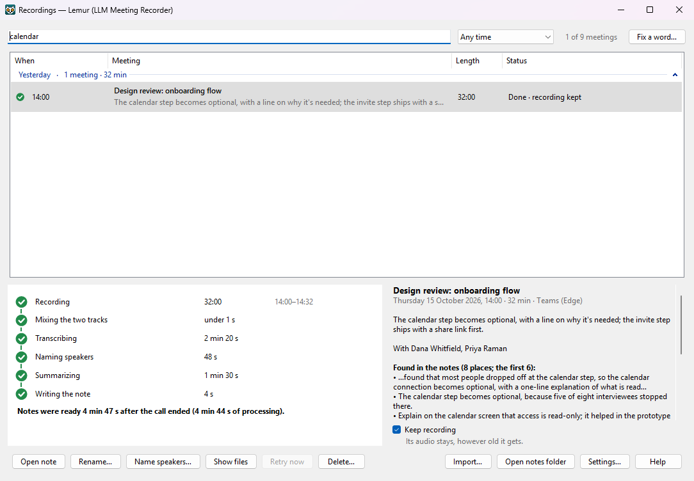
Select a meeting and the panel beside its steps shows what it was about and who was there. While you search, it also lists the lines where your words come up: lines of the transcript with their time and speaker, and lines of the summary.
Renaming a meeting
Select a meeting and click Rename…, or press F2.
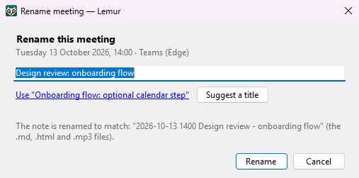
- The link under the box fills in the title your summary model suggested when it wrote the notes.
- Suggest a title asks your summary model again, from the meeting's summary. It takes a few seconds.
- The note's files (
.md,.html,.mp3and.json) are renamed to match, and the title inside them changes. If you edited the note yourself, your edits stay: only its title changes. - For a meeting still waiting for its notes, the notes take the new title when they're made.
Fixing a misheard word
Transcription doesn't know the names of your company's products, customers or people, so it writes what it hears: "Cooper Netties" for Kubernetes. Fix it once and it's fixed everywhere.
- Search for the wrong word, so you can see where it is.
- Click Fix a word…, beside the search box (or right-click a meeting). What you searched for is filled in.
- Type how it should be written. Lemur counts the meetings that have the wrong word.
- Click Fix.
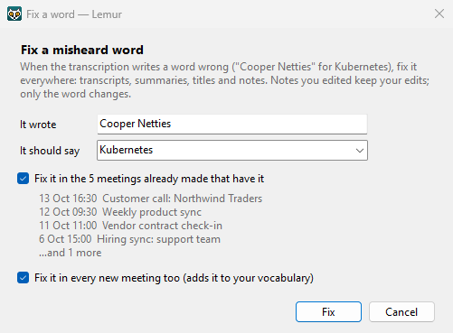
- The meetings already made: their transcripts, summaries, titles, descriptions and notes are fixed. A note you edited keeps your edits: only the word changes.
- Every new meeting: the word goes into your vocabulary, so it's fixed in every transcript from now on, before the summary is written.
- Lemur matches whole words, in any case, so fixing "Santavo" doesn't touch "Santavos". A misheard word can be several words ("Cooper Netties").
The steps
Select a meeting to see its steps as a timeline: Recording, Mixing the two tracks, Transcribing, Naming speakers, Summarizing and Writing the note.
- Done, with how long it took (and how many tries, if more than one).
- Running now (the ring turns), with the time so far and how long it usually takes.
- Failed, with the try number and when it will be tried again.
- Still to come, with a rough time (~2 min).
The line under the steps says when the notes should be ready (Notes expected around 10:42). For a meeting waiting in line it counts the meetings ahead of it. For the call being recorded, it says how long the notes would take if the call ended now. For a finished meeting, it says how long the notes took after the call ended.
The times to come are rough guesses. They start from measurements of the author's servers and adjust to yours as your meetings finish (only steps that worked first time count).
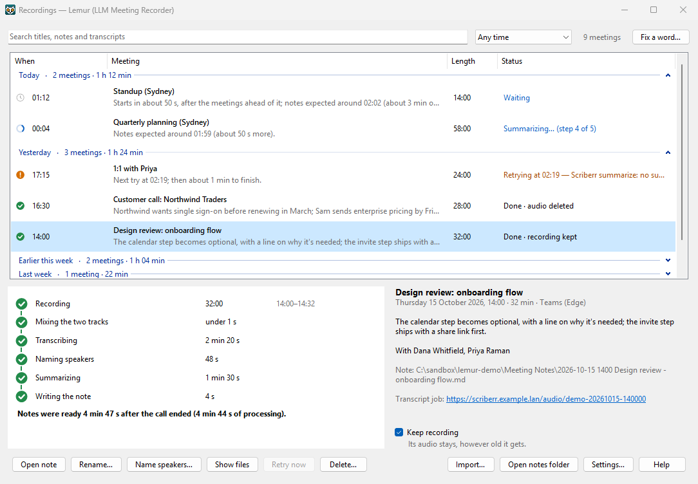
The buttons
- Open note
- Opens the meeting's note page. Double-clicking the row, or pressing Enter, does the same.
- Rename…
- Gives the meeting a new title, and its note's files a new name (Renaming a meeting). F2 does the same.
- Fix a word…
- Beside the search box: fixes a word the transcription keeps getting wrong (Fixing a misheard word).
- Name speakers…
- Opens Who's speaking? for a finished meeting.
- Show files
- Opens the meeting's folder: its audio, transcript and state files.
- Retry now
- For a failed or waiting meeting: try at once instead of waiting for the next scheduled try (after the meeting being worked on, if any).
- Make notes anyway
- Only for an interrupted recording: repairs the audio files Lemur left half-written, then makes notes from what was recorded.
- Delete…
- Asks first. For a finished meeting it deletes the working files (audio, transcript, speaker data) and keeps the note; you can't name its speakers afterwards. For an unfinished one it deletes the whole recording. Delete does the same.
- Import…
- Makes notes from a recording made somewhere else: your phone, a recorder, a video (From your phone or another recorder). Dropping the file on the window does the same.
- Open notes folder
- Your notes folder.
- Settings…
- Opens Settings.
- Help
- Opens this section of the manual.
Right-click a meeting for the same actions. Under what the meeting was about, the panel beside the steps has the details: where the note is, a link to the transcript on your Scriberr server, and the last error if a step failed.
Keeping a meeting's recording
Lemur deletes the audio it works from 14 days after a meeting's notes are made (Keep audio for), and the note's MP3 with it if you've chosen that. For a meeting you'll want to hear again, tick Keep recording under its details: its audio and its note's MP3 then stay, however old it gets. It's unticked to begin with.
- You can tick it while the meeting is being recorded or its notes are being made.
- The line under the box says what it means for that meeting. If the working audio has gone already, ticking it keeps the note's MP3. When there's nothing left to keep, the box is greyed out.
- Untick it to let the clean-up have them again. For a meeting already older than the days, Lemur asks first: what it still has is deleted within a few minutes.
- The status column says recording kept, or audio deleted · MP3 kept.
The right-click menu has Keep recording too, and the command line has
llmmr keep <recording>.
When something fails
Each finished step is saved, so a retry starts at the step that failed. Lemur tries again after 1, 5 and 15 minutes, then every hour, for as long as it takes. If a transcription timed out, the retry picks up the job on the server instead of uploading the meeting again. A recording is never lost because a server was down.
Meeting notes
Each meeting becomes four files in your notes folder (Documents\Meeting Notes unless you changed it),
named by date, time and meeting title:
| File | For |
|---|---|
2026-10-14 0930 Design review.html | Reading. Lemur opens this one. It has the audio player. |
2026-10-14 0930 Design review.md | The same note as Markdown, for Obsidian or other note apps. It starts with front matter (title, one-line description, date, length, people) that those apps can search. |
2026-10-14 0930 Design review.mp3 | The meeting's audio: about 14 MB an hour. Kept with the note, unless you have Lemur delete MP3s too after 14 days. |
2026-10-14 0930 Design review.json | The same meeting for programs: its facts, its action items and which are yours, links back to the note, and the transcript unless you leave it out (The meeting file). |
A meeting the call app didn't name (Google Meet, Zoom, GoTo Meeting, or a recording you started yourself) is named after the title your summary model suggests from what was said. Renaming a meeting in the Recordings window renames its files together.
The note has these sections, written by your summary model from the transcript:
- Summary: why the meeting happened and where it landed.
- Action items: a checklist,
- [ ] owner - task - due date [time], such as- [ ] Paul - send Northwind the pricing - Fri 2026-10-16 [00:12:34]. Only things someone agreed to do, not ideas that were floated. The due date is written out when one was said, and the time is where in the meeting it was agreed: on the note page, it plays the recording from there. (Older notes have neither.) - Decisions, with the reason if one was given.
- Open questions, and who follows up.
- Concepts and terms: names, acronyms and ideas worth remembering.
- Transcript: every line, with its time and who said it.
You can use your own summary instructions instead: see the Notes tab.
The note page
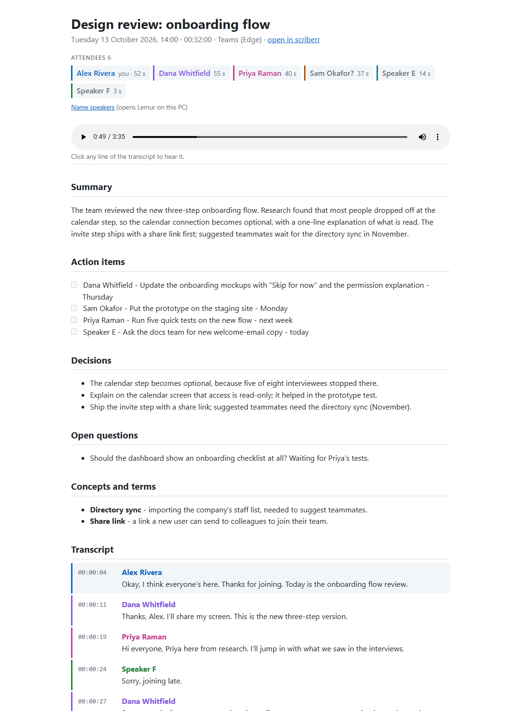
- Attendees, under the title: everyone who spoke, you first and then the others by how long they talked, each in the colour of their lines in the transcript. A voice nobody has named yet (Speaker E) or a guess (Sam Okafor?) is shown in grey; Name speakers, just below, names them. Someone who never said a word can't be heard, so isn't on the list.
- Click a line to play the recording from just before it. The line being said is highlighted as it plays.
- Click an action item's time (
00:12:34) to hear where it was agreed. - Opened at a moment, from a link to the meeting, the page scrolls to the line said then and lights it, and ▶ Play from 12:34 plays it. (Browsers don't start sound by themselves, so it waits for that click.)
- The player stays at the top as you scroll.
- Name speakers opens Who's speaking? in Lemur on this PC. The first time, your browser may ask whether to open Lemur: allow it.
- The page loads nothing from the internet. Its only script is the player.
Keep the files together. If the MP3 isn't beside the page any more, the page says so and hides the player. The MP3 is kept until you delete the note: the 14-day clean-up only touches the working audio Lemur keeps in its recordings folder, unless you tick Delete each note's MP3 too on the Notes tab. Then the MP3 goes with the working audio, to the Recycle Bin, and Lemur makes the page again without its player and takes the link to the MP3 out of the Markdown note (out of one you edited too, leaving your edits). The note and its transcript stay. A meeting marked Keep recording keeps its MP3.
If you edit the Markdown note, Lemur doesn't rewrite it. Naming speakers later just swaps the labels in place, and renaming the meeting just changes its title.
The meeting file
The .json beside each note is the meeting in a form a program can read: a script of yours, a note
app's plugin, or an assistant that turns your action items into tasks. It's written with the note, and again
whenever the note changes: speakers named, a word fixed, the meeting renamed or its notes made again. Meetings
from before it existed get one in the background, a few a minute. It is made from Lemur's own record of the
meeting, so editing the Markdown note doesn't change it.
- The meeting
id(the recording's name, such as20261014-093000, which never changes),title,description,startedAt,endedAt,durationSeconds,source,recordedBy(your name),people(everyone heard, withme, how long they talked, and whether they'renamedfor sure), andlink(opens the note).- Action items
actionItems: each with anidthat stays the same when speakers are named, words are fixed or the meeting is renamed (an item worded differently when its notes are made again is a new item, with a new id), itstext,owner,ownerIsMe,due(a date, when the words pin one down) anddueText(the words),at(seconds into the meeting) and alinkthat opens the note there, anddone.ownerIsMeis true when the owner is you by name; Lemur knows which voice was yours, so a program doesn't have to guess.actionItemsFoundis false when the summary has no action items in the usual form (your own prompt, say): then trust nobody's owner.- The rest
summary,decisions,openQuestions, the whole summary assummaryMarkdown, and thetranscript, one entry per speaker's turn.- Without the transcript
- Untick Include the transcript on the
Notes tab when what reads the file may send it to a model on the internet. The file
then has everything else, but no
transcript, and says so:"leftOut": ["transcript"]. Every meeting's file is written again that way within a minute, and stays that way until you tick it again. The summary is still in it, and the note's.mdand page still have the whole transcript. - Changes
revisionchanges whenever anything in the file does, andrevisedAtsays when. A program given the file twice can tell an update from a repeat, and keep the newer.
meeting-file.schema.json, beside this manual, describes every field for programs that check what they
read. llmmr export <recording> --out <folder> writes a meeting's file somewhere else, with
the transcript or without it as the Notes tab says, or as --transcript or --no-transcript
says for that one.
Links to a meeting
A link like lemur://note/20261014-093000?t=754 opens that meeting's note page on a PC with Lemur, at
12 minutes 34 seconds in (without ?t=, at the top). The meeting file has one for the meeting and one for
each action item, so a task made from an item can lead back to the moment it was agreed: put the link on a task
card, in a chat message or in a document.
- The first time, your browser asks whether to open Lemur, as it does for Name speakers.
- It finds the note wherever it is now, even after a rename. On a second PC that shares your notes folder (through OneDrive, say) it finds the note there, though the recording itself is on the first.
- A meeting whose note isn't on this PC shows That meeting's note isn't on this PC.
- The link is only the recording's name and a time: nothing of the meeting is in it. On a phone it does nothing.
Naming speakers
In the transcript, your lines carry your name and everyone else starts as Speaker A, Speaker B and so on. There are three ways other people get their real names:
- Introductions
- On by default. When someone says who they are ("hi, it's Dana"), your summary model spots it and Dana is named in that meeting's note. Lemur only believes it if the words really are in that speaker's own lines. It never remembers a voice from an introduction by itself.
- Their voice
- Off until you turn it on (Settings → People). The first time a voice is heard you name it once; after that it's recognised in every meeting. It needs the voiceprint service on your server.
- You
- Name anyone yourself, in the Who's speaking? window.
The "Who's speaking?" window
Open it from the Meeting notes ready notification when voices weren't recognised, from Name speakers… in the Recordings window, from Name voices in last meeting… in the tray menu, or from the Name speakers link on a note page. It never pops up by itself.
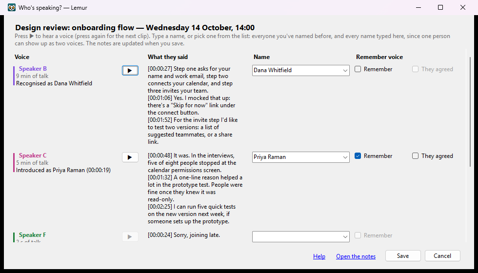
- The coloured label
- Speaker A, B… in the same colour as on the note page.
- ▶
- Plays a short clip of that voice. Press again for the next clip.
- What they said
- A few of their lines, with times, plus what Lemur thinks so far: Recognised as Dana, Introduced as Dana (00:01:23), Maybe Dana?, Sounds like two people and so on.
- Name
- Type a name, or pick one from the list: everyone you've named before, and every name typed in this window. One person can show up as two or three voices (Speaker B and Speaker E). Give each the same name and they're one person, in the note and in your people folder. Pick Me (your name) if it's you, or Not a person (video, TV) for a recording someone played.
- Remember
- Keeps a voiceprint of this person, so they're recognised next time. Only when voice recognition is on and the meeting's audio is still there.
- They agreed
- Shown when Lemur asks before remembering a voice. Ticking it records that you say they agreed. It isn't their written consent where the law asks for that. One tick is enough for each person: it counts for every voice you give their name, in this meeting and later ones.
Click Save and the note is updated. The names go into the summary, the meeting's one-line description and, when Lemur chose it, its title (the note's files are renamed to match; a title you typed stays). Open the notes shows it.
After 14 days the meeting's working audio is deleted, unless you marked it Keep recording. You can still name its speakers then, but you can't play or remember their voices.
The people folder
Everyone you name with Remember is kept in your people folder: one small file per person, holding their voiceprints and one short reference clip. It's on this PC unless you choose another folder.
- Several PCs: point them all at one folder that syncs, such as OneDrive, and they share everyone you've named.
- A PC that can't reach it: Export people… on one PC, Import people… on the other. The zip holds voiceprints and voice clips, so keep it private and delete it once it's imported.
- Deleting someone removes their voiceprints and clips at once.
Some laws (for example Illinois' BIPA and the GDPR) treat voiceprints as biometric data. That's why voice recognition is off until you turn it on, why nobody's voice is remembered unless you name them, and why Lemur asks by default whether they agreed. On the People tab, Using this at work? What to tell your IT department gives you a summary to pass on.
Settings
Open Settings from the tray menu (Settings…) or the Recordings window. It has six tabs. Save checks your changes and applies them at once; Cancel throws them away. Keys and people are different: they're saved the moment you change them. The Help link at the bottom opens the part of this manual for the tab you're on.
Account
Where your recordings are turned into text and notes.
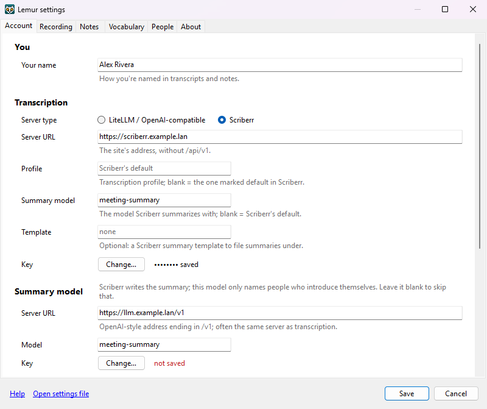
- Your name
- How you're named in transcripts and notes.
- Server type
- Scriberr (the tested choice: it also tells voices apart) or LiteLLM / OpenAI-compatible.
- Server URL
- For Scriberr, the site's address without
/api/v1. For an OpenAI-compatible server, its address ending in/v1. - Profile, Summary model, Template
- Scriberr only, all optional. The transcription profile (blank = the one marked default in Scriberr), the model Scriberr summarizes with (blank = Scriberr's default), and a summary template to file summaries under.
- Model, Language
- OpenAI-compatible only: the transcription model, and a language code such as
en(blank = detect it). - Summary model
- Address, model and key of the AI model behind an OpenAI-compatible API. With Scriberr, Scriberr writes the summary and this model only names people who introduce themselves; leave it blank to skip that. Otherwise it writes the summary too.
- Key
- Click Change… and paste the key. It goes straight into Windows Credential Manager and shows as •••••••• saved. If two servers are on the same host, Lemur offers to use the same key for both.
- Voiceprints key
- Only needed for voice recognition, and only if the voiceprint model isn't on the summary model's server (then the summary key is used).
- Test connection
- Checks each server that's switched on, using what's in the window.
- Import setup file… / Export setup file…
- Moves these settings to another PC or a colleague. A
.lemursetupfile holds server addresses and model names only: never keys, folders or devices, so it's safe to send. Whoever imports it then saves their own key.
Recording
When to record, and from which microphone and speakers.
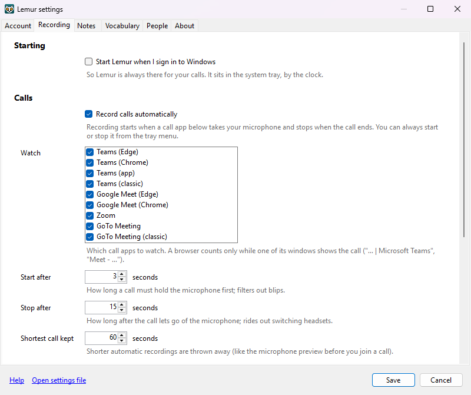
- Start Lemur when I sign in to Windows
- So Lemur is always there for your calls. The setup window asks this on its last step; this is where you change it later.
- Record calls automatically
- Turns call detection on or off. You can always start or stop a recording from the tray menu.
- Watch
- Which call apps to watch (the built-in list in Calls, automatically). Untick the ones you don't use.
- Start after
- How long a call must hold the microphone first (3 seconds). Filters out blips.
- Stop after
- How long after the call lets go of the microphone (15 seconds). Rides out switching headsets.
- Shortest call kept
- Shorter automatic recordings are thrown away (60 seconds).
- Record from
- Follow the call (recommended) records the microphone and headset the call really uses. Windows default uses whatever Windows is set to when the recording starts. This device: picks a microphone and speakers by name; part of the name ("Arctis") is enough.
- Keep the other side's audio flowing during silences
- Recommended. Plays inaudible silence on the speakers while recording, because otherwise Windows stops sending the call's sound when nobody talks.
- Import from
- Under Recordings from elsewhere: a folder Lemur watches for recordings to make notes from, such as one your phone's voice memos sync to (From your phone or another recorder). Blank means none. It can't be your notes folder, whose MP3s Lemur would import again.
Notes
Where your meeting notes go, and how long audio is kept.
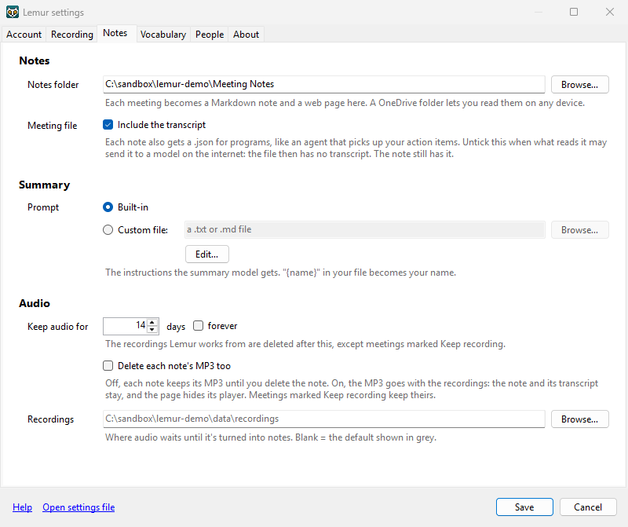
- Notes folder
- Where each meeting's note, page and MP3 go. A OneDrive folder lets you read them on any device.
- Meeting file
- Include the transcript (ticked to begin with) puts the whole transcript in the meeting file beside each note. Untick it when a program that reads those files, an assistant that picks up your action items say, uses a model on the internet: the files then keep the summary, action items and people, but not what was said line by line. The note itself keeps its transcript.
- Prompt
- The instructions the summary model gets. Built-in, or
Custom file: a
.txtor.mdfile of your own. Edit… makes you a copy of the built-in one to change.{name}in your file becomes your name and{date}the meeting's day (Wednesday 2026-10-14). Keep the part that asks for aTitle:and anAbout:line first: they give each meeting its title and one-line description. Without them, Lemur asks the summary model for those separately. Keep the action items' form too (- [ ] owner - task - due date [time]), or the meeting file can't tell whose they are. - Keep audio for
- The working audio Lemur makes notes from is deleted this many days after the note is made (14 by default), or tick forever. A meeting you mark Keep recording in the Recordings window keeps its audio, however old it gets.
- Delete each note's MP3 too
- Off to begin with: each note keeps its own MP3 until you delete the note. Tick it, and each MP3 goes with the working audio, to the Recycle Bin (on a network folder, which has none, Windows deletes it; one that's open in a player waits for the next try). The note and its transcript stay; the page is made again without its player, and the meeting file says there's no audio. Meetings marked Keep recording keep theirs. Turning it on, or saving fewer days while it's on, deletes the MP3s of meetings already older than that, so Lemur counts them and asks first; No leaves the setting as it was. It's greyed out while forever is ticked.
- Recordings
- Where audio waits until it's turned into notes. Blank = the default, shown in grey.
Vocabulary
Words and names your transcription gets wrong, and how to write them.
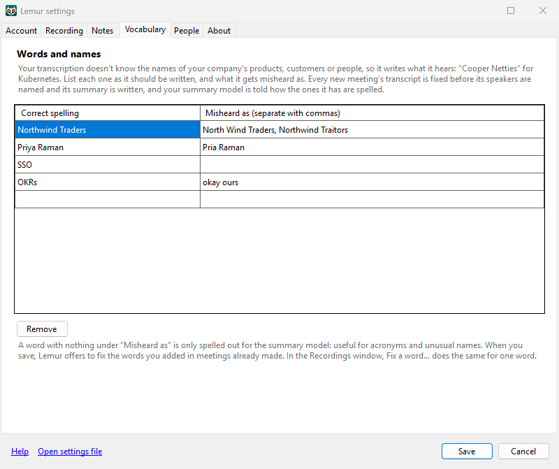
- Correct spelling
- How the word or name should be written. When a meeting's transcript has a word from here, your summary model is told how it's spelled. Words the meeting doesn't have aren't sent, so the summary can't mention them.
- Misheard as
- What the transcription writes instead, separated by commas. Each one is fixed in every new meeting's transcript before its speakers are named and its summary is written. Leave it empty for a word that's only spelled out for the summary model, such as an acronym.
- Remove
- Takes the selected rows out. Notes already fixed stay fixed.
When you save, Lemur looks for the words you added in meetings already made and offers to fix them there too.
Your transcription server may also be told to listen for these words: a Whisper model gets them as a hint. NVIDIA's Parakeet, which Scriberr uses for fast transcription, can't take hints, so with it Lemur fixes the words afterwards. The self-hosting guide has the details.
People
Real names in your notes instead of "Speaker B". See Naming speakers for how it works.
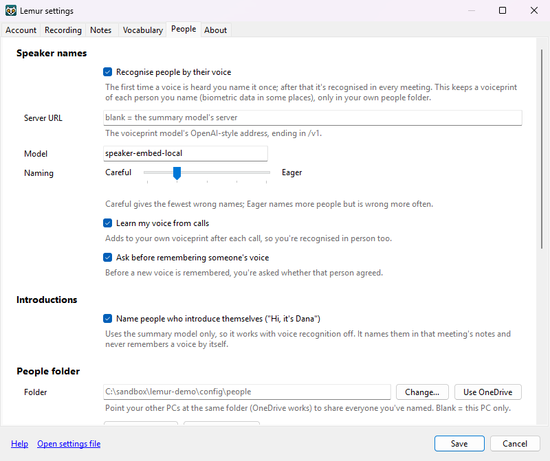
- Recognise people by their voice
- Off by default. Keeps a voiceprint of each person you name, only in your own people folder.
- Server URL, Model
- The voiceprint model's address (blank = the summary model's server) and its name
(
speaker-embed-localunless your server says otherwise). - Naming
- From Careful (the fewest wrong names) to Eager (more names, wrong more often). Start with Careful.
- Learn my voice from calls
- Adds to your own voiceprint after each call, so you're recognised in person too.
- Ask before remembering someone's voice
- Before a new voice is remembered, you're asked whether that person agreed.
- Name people who introduce themselves
- Uses the summary model only, so it works with voice recognition off. It names them in that meeting's note and never remembers a voice by itself.
- People folder
- Where the people you've named are kept. Change… or Use OneDrive to move it (Lemur offers to copy everyone across), and Export people… / Import people… for a PC that can't reach it.
- People you've named
- Everyone in the folder, with how many voiceprints each has and whether they agreed. Select someone to Rename…, Merge into… someone else, Delete…, or Add sample from file… (a recording of them talking alone). Their voiceprints are listed underneath, with ▶ Play and Delete voiceprint….
About
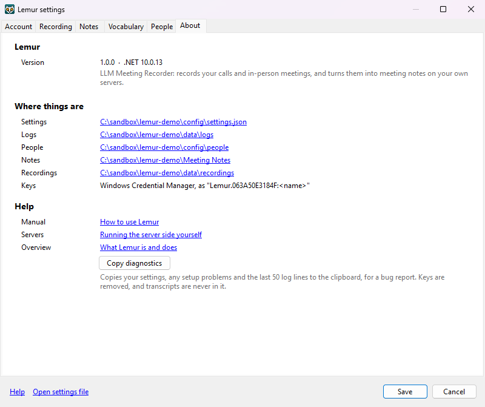
- Version
- Lemur's version and the .NET version it runs on.
- Where things are
- Links to the settings file and the logs, people, notes and recordings folders. Keys are
in Windows Credential Manager as
Lemur:<name>. - Help
- This manual, the self-hosting guide and the overview.
- Copy diagnostics
- Copies your settings, any setup problems and the last 50 log lines to the clipboard, for a bug report. Keys are removed, and transcripts are never in it.
The settings file
Everything in Settings is saved in %APPDATA%\Lemur\settings.json. Open settings file
at the bottom of the Settings window opens it. If you edit it by hand, choose Reload settings
from the tray menu. A few things are only in the file:
| Setting | Default | What it does |
|---|---|---|
summary.maxTokens | 16384 | Room for the summary model's answer, including its thinking. A local reasoning model can need 32768. |
detection.joinScreenTitleContains | Meeting join | What Teams' join screen is called in its window title; used to split back-to-back meetings. |
detection.sources | the built-in list | The call apps to watch. You can add your own rules here. |
speakers.level | 1 | The naming level, 1 (Careful) to 5 (Eager). |
Keys never go in this file. It only names them; their values are in Credential Manager.
Your data and privacy
Lemur sends a meeting only to the servers in your settings. Here is everything it keeps, and for how long:
| What | Where | Kept |
|---|---|---|
| Working audio: your microphone, the call, the mix, and that meeting's voiceprints | %LOCALAPPDATA%\Lemur\recordings | 14 days after the note is made (Notes tab), then deleted; meetings marked Keep recording keep it |
| Transcript, speaker data and progress of each meeting | the same folder | until you delete them (Recordings window → Delete…) |
Notes: .md, .html, .mp3 and .json | Documents\Meeting Notes | until you delete them; the .mp3 goes with the working audio if you tick Delete each note's MP3 too (Notes tab), unless the meeting is marked Keep recording |
| Recordings you imported from the import folder | its Imported folder | until you delete them (Lemur only moves them there) |
| People you've named: voiceprints and one clip each | your people folder (%APPDATA%\Lemur\people unless you chose another) | until you delete them |
| Settings | %APPDATA%\Lemur\settings.json | until you uninstall and delete it |
| Keys | Windows Credential Manager, Lemur:<name> | until you remove them |
| Logs | %LOCALAPPDATA%\Lemur\logs | never hold transcript text or keys |
What leaves your PC, and where it goes:
- The meeting's audio (one mixed file) goes to your transcription server. Scriberr keeps it, with the transcript and summary, until it's deleted there.
- The labelled transcript goes to your summary model.
- Short voice clips go to the voiceprint service, only when voice recognition is on. It keeps nothing.
A program you let read your notes folder sees what's in it. If it uses a model on the internet, untick
Include the transcript (Notes tab) and give it only the
.json files: they then hold the summary and action items, not the conversation.
Lemur has no cloud service of its own and sends nothing anywhere else. Whether your meetings stay on your network depends on where those servers are. The self-hosting guide covers how to keep them local.
Troubleshooting
A call wasn't recorded
- Check the tray icon's status line. Auto-record paused or Not recording this call (you stopped it) explain themselves.
- Check the Recording tab: Record calls automatically on, and the app ticked under Watch.
- In a browser, the call's tab must be the one showing in its window.
- Under 60 seconds? It was thrown away (Recording not kept).
- Run
llmmr detectin a terminal during a call. Once a second, it shows which apps hold the microphone and what Lemur makes of them. Use Start recording now meanwhile.
Nobody on a browser call can hear me
A call in a browser (Zoom, Meet) starts on Windows' default microphone. If that's Stereo Mix, the call hears your PC's own sound instead of you, and Lemur records what the call hears. Pick your microphone in the call's settings, or set it as the default in Windows: Settings → System → Sound → Input.
Notes didn't appear
- Open the Recordings window. The meeting's status and steps show where it stopped and why.
- A server that's down or unreachable is retried after 1, 5 and 15 minutes, then hourly. Click Retry now once it's back.
- Check the addresses and keys: Settings → Account → Test connection.
- Working from home? You may need your VPN to reach the servers.
"No summary came back" on long meetings
With Scriberr, Scriberr gives the summary model 5 minutes, then gives up. If your model needs longer for a long meeting, every retry hits the same limit. Use a faster summary model (see the self-hosting guide).
"Introductions skipped: the model used all … of summary.maxTokens"
Your summary model thinks before it answers, and ran out of room. Raise summary.maxTokens in the
settings file (to 32768 for a local reasoning model), then Reload
settings.
Other people's lines are marked as mine
Their voices are reaching your microphone, for example from laptop speakers. A headset, or a speakerphone with echo cancellation, keeps them out.
A few of my words are under "Speaker B"
Where you and someone else talk at the same moment, the louder track gets the words, and the call usually comes through louder than your microphone. Expect a few short lines like that in a meeting. Scriberr times every word, so Lemur can split a line between you; with a transcription server that doesn't, each line goes whole to whoever said most of it.
Other questions
- Sounds that weren't the call are in the transcript
- Everything playing on the call's headset or speakers is recorded. Pause videos and music during calls.
- The note page has no player
- The MP3 isn't beside the page (moved or deleted, or Lemur deleted it after 14 days because Delete each note's MP3 too is ticked), or Windows couldn't make one: Windows "N" editions need the Media Feature Pack.
- The browser asks to open Lemur
- That's a Name speakers link, or a link to a meeting. Allow it.
- Starting Lemur opens the Recordings window
- It's already running. Only one copy runs at a time.
- Lemur doesn't start when I sign in
- Tick Start Lemur when I sign in to Windows on the Recording tab. Task Manager → Startup apps lists it too.
- Reporting a problem
- Settings → About → Copy diagnostics, and paste it into your message. The tray menu's Open log folder has the full logs.
Command line: llmmr
llmmr is Lemur's engine without the tray: setup, diagnosis and testing. It's installed beside Lemur and
works in any terminal opened after installing. llmmr --help lists everything.
| Command | What it does |
|---|---|
llmmr settings | Shows the settings path and anything missing (status: ready when complete) |
llmmr set-secret <name> | Stores a key read from standard input (pipe it in, as below). Lemur never prints it. |
llmmr secret-status <name> | Says whether a key is stored |
llmmr devices | Lists microphones and outputs, and the Windows defaults |
llmmr detect [--seconds N] | Shows what call detection sees, once a second. Run it during a call that doesn't record. |
llmmr selftest [--mic name] | Plays three soft beeps while recording and checks both tracks line up |
llmmr record --seconds N [--title T] [--process] | A recording from the command line (WAV only) |
llmmr make-test-recording --mic a.wav --others b.wav | Builds a recording from existing audio, for testing |
llmmr import <file> [--title T] [--started "2026-10-14 09:30"] | Makes a meeting from a recording made elsewhere, as Import… does. Lemur makes its notes. A file imported before is refused unless you add --again. |
llmmr process <folder> [--from …] [--notes <folder>] | Runs the notes steps on a recording again, from a given step |
llmmr rename <recording> "<title>" | Gives a meeting a new title; its note's files are renamed to match |
llmmr keep <recording> [--off] | Marks a meeting Keep recording, as the Recordings window's box does; --off unticks it. Safe while Lemur runs. |
llmmr export <recording> [--out <folder>] [--transcript | --no-transcript] | Writes the meeting's meeting file (beside its note, or into that folder) and prints where. The transcript is in it as the Notes tab says; with --out, either flag decides instead. |
llmmr describe <recording> [--show] [--apply] | Asks your summary model for a meeting's title and one-line description, from its summary. --show prints them; --apply keeps them, and titles a meeting that had no title (unless you edited its note). |
llmmr remake <recording> … | Makes finished meetings' notes again with this version of Lemur: transcript (fetched again from Scriberr), who said what, speaker names, summary and note. Keeps titles, the names you gave and where each note is, and puts a backup of the old files in the recording's folder. Only for notes you haven't edited. Safe while Lemur runs. |
llmmr vocab list|add|remove | Your vocabulary: llmmr vocab add "Kubernetes" "Cooper Netties" |
llmmr vocab fix <recording> | --all | Fixes the vocabulary's words in meetings already made |
llmmr identify <recording> | Re-runs speaker naming and prints what it found (notes unchanged) |
llmmr people list|name|rename|merge|delete|export|import | The people you've named |
llmmr voices calibrate | Shows which voiceprint model your server runs, and whether Lemur has matching numbers for it |
llmmr voices benchmark … | Works out matching numbers for a new voiceprint model from test meetings |
To store a key without it showing on screen or landing in your history, copy it, then:
Get-Clipboard | llmmr set-secret summary-api-keyllmmr process on a folder in Lemur's recordings folder puts it back in Lemur's queue too, and both
work on it at once. Quit Lemur first, or copy the folder somewhere else and add --notes <a test folder>
so the test note doesn't land among your real notes.
Uninstalling
Open Windows Settings → Apps → Installed apps, find Lemur and choose Uninstall. If Lemur is running, it's closed first, and its start-at-sign-in entry is removed.
Your own data stays, in case you reinstall. To remove it too, delete:
%APPDATA%\Lemur: settings and, by default, the people folder.%LOCALAPPDATA%\Lemur: recordings and logs.- Your notes in
Documents\Meeting Notes, if you don't want them. - A people folder elsewhere (OneDrive, for example), if you chose one.
- Your keys: Control Panel → Credential Manager → Windows Credentials, the entries starting
Lemur:. Or in a terminal:cmdkey /list, thencmdkey /delete:Lemur:<name>for each.
Your servers keep their own copies: delete the meetings in Scriberr too if you no longer want them.